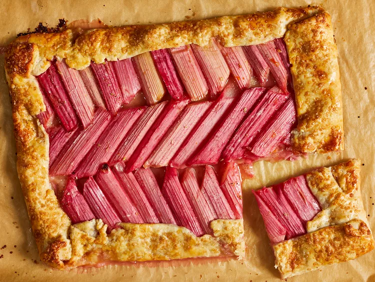

Rhubard Galette

Description
This rhubarb galette is bright and colorful. It is a beautiful spring dessert to serve for an afternoon sweet treat or to cap off a dinner party. Serve warm with ice cream, if desired.
Ingredients
- Flour
- White Sugar
- Kosher Salt
- Butter
- Cold Water
- Rhubarb
- Cornstarch
- Vanilla Extract
- Cardamom
- Orange Zest
- Eggs
- Turbinado Sugar
Instructions
- Gather all ingredients.
- Prepare the Crust: Whisk together flour, white sugar, and salt in a large bowl.
- Add butter; using your fingers or a pastry blender, work the butter into the flour mixture until butter pieces are no larger than a dime.
- Drizzle ice cold water over the flour and butter mixture. Gently combine until no dry spots remain and the mixture resembles a shaggy dough.
- Form the dough into a rectangular block and wrap in plastic wrap. Refrigerate until firm, at least 1 hour.
- Preheat the oven to 400 degrees F (200 degrees C). Place a rimmed baking sheet on the center rack of oven. Line a second baking sheet with parchment paper.
- Lightly dust a work surface with flour. Roll the dough into a large rectangle, about 12x16 inches, constantly turning and moving the dough to prevent sticking. Transfer the rolled dough to the lined baking sheet and chill for 15 minutes.
- Prepare the Filling: Halve rhubarb stalks lengthwise and cut into 8-inch pieces. Combine rhubarb pieces, white sugar, cornstarch, vanilla, cardamom, and orange zest in a large bowl; mix well. Let stand 5 minutes.
- Remove the dough from the fridge refrigerator. Place the rhubarb side-by-side in an even layer in the center of the dough, leaving a 2-inch border around the edges. Fold the edges towards the center of the galette (the edges will overlap with some of the filling). Pinch pleats corners firmly to seal.
- Whisk together the egg and tap water in a small bowl. Brush the dough with the egg wash and sprinkle with turbinado sugar. Refrigerate for 15 minutes.
- Remove baking sheet from oven; carefully slide the galette and parchment paper onto the preheated baking sheet in the oven.
- Bake in the preheated oven until the crust is golden and the rhubarb is softened, 30 to 40 minutes. Remove from the oven and let cool on the baking sheet for 5 minutes, then transfer to a cooling rack to cool for 15 minutes before serving. Serve warm with ice cream, if desired.